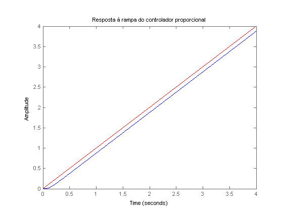
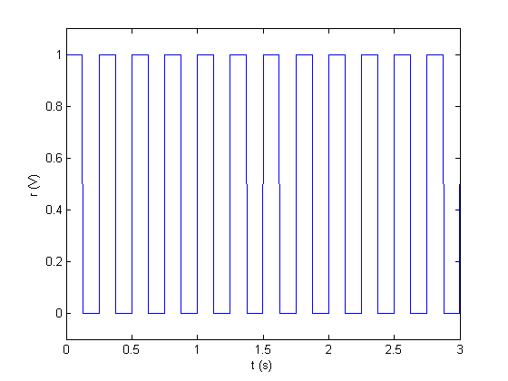
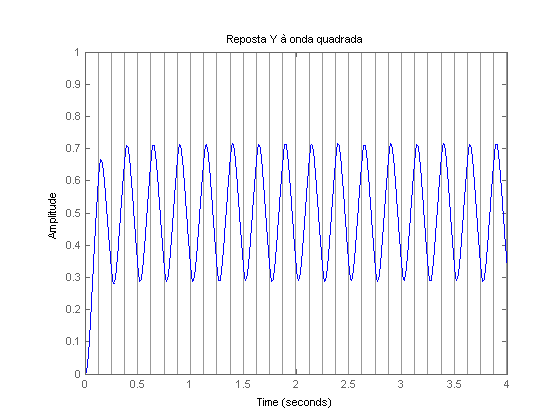
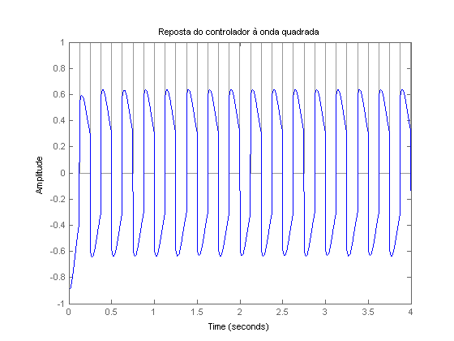
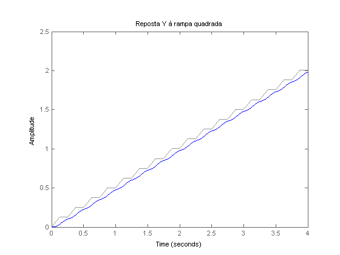
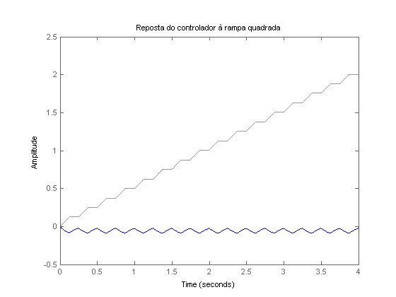

Contents
close all; clear all; clc; s=tf('s'); syms x; G=8.993/(0.0003019*s^3+0.03622*s^2+s) G2=8.993/(0.0003019*x^3+0.03622*x^2+x);
G =
8.993
-------------------------------
0.0003019 s^3 + 0.03622 s^2 + s
Continuous-time transfer function.
controlador 1
b=diff(1/G2); sr=solve(b,x); sr1=sr(1); K=-1/subs(G2,x,sr1); K=0.8926 %%resposta a rampa controlador 1 t=0:0.001:4; rampa=t; Y=minreal(G*K/(1+G*K)) step(Y/s, 4) hold on plot(rampa,t,'r'); title('Resposta à rampa do controlador proporcional'); %%entrada quadrada
K =
0.8926
Y =
2.659e04
---------------------------------
s^3 + 120 s^2 + 3312 s + 2.659e04
Continuous-time transfer function.

Entrada
Uma onda quadrada de 0,25 Hz e amplitude 1 (volt)
t = 0:.001:4; sqr = square(2*pi*4*t)*0.5+0.5; figure, plot(t,sqr); axis([0 3 -0.1 1.1]); xlabel('t (s)'); ylabel('r (V)');

saidas a onda quadrada
figure,lsim(Y, sqr,t), title('Reposta Y à onda quadrada'), snapnow; figure,lsim(K*Y-K, sqr,t), title('Reposta do controlador à onda quadrada'), snapnow; %%saida a onda quadrada * rampa rampa_2 = lsim(1/s, sqr, t); figure,lsim(Y, rampa_2,t), title('Reposta Y à rampa quadrada'), snapnow; figure,lsim(K*Y-K, rampa_2,t), title('Reposta do controlador à rampa quadrada'), snapnow;



